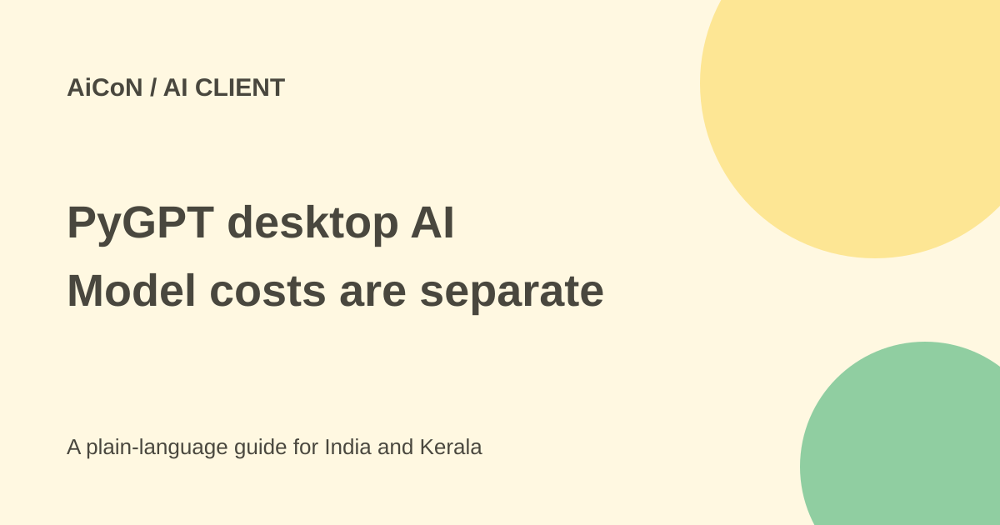

PyGPT desktop AI: free software, cloud costs and tool risks
PyGPT is an MIT-licensed desktop AI client for Windows, Linux and macOS. You can choose cloud providers or locally hosted models. Free software does not include free paid-model usage or make enabled tools harmless.

What does the app do?
The repository describes chat with multiple providers, image and audio modes, local model support, document search and multi-agent workflows. Some capabilities depend on the selected provider or model. The phrase any model is not proof that every model supports every tool.
File search can retrieve information from documents, websites and saved chats. This is often called RAG: the app finds relevant source passages and supplies them to the model. Retrieval does not guarantee that the answer cites the right passage or that the passage is reliable.
Local app, separate model
PyGPT runs on your computer. A hosted model still receives the prompts and other content needed to process a request. A local Ollama or compatible setup may keep inference on the computer, but external search, plugins and tools can still send data elsewhere.
The terms say the app stores configuration and application data locally unless a chosen feature needs an external service. The author does not receive prompts, files or keys merely because you use the app. That is narrower than a promise of no network traffic: updates and enabled online functionality may transmit technical data.
Free or paid in India?
The actual licence file is MIT, and there is no app licence fee described for the open-source code. Providers set their own API prices, rate limits and terms. A consumer chat subscription does not automatically pay for its developer API.
The terms warn that agents, tools, attachments, retries and background tasks can trigger extra requests. Set provider billing limits before a trial. Local models need suitable hardware, disk space and electricity; rented servers can cost money. No single rupee amount covers every setup.
Why tools need care
The repository includes filesystem access, Python execution, system commands and web tools through plugins. It says currently enabled plugins are available to agents. An agent can therefore gain more access than you intended if several powerful plugins are already on.
Docker or another restricted execution setup can reduce some risks, but mounting your home folder or giving it account keys defeats much of that separation. Do not assume a code sandbox makes file deletion, web requests or copied private data safe.
How to try a small task
- Read the current repository and licence, and use its official release route.
- Choose a local model or a provider API intentionally. Read that provider's costs and data terms.
- Use a test profile and invented prompts, without your main documents or accounts.
- Keep file-writing, system-command and network plugins off unless a small test needs them.
- For file search, add a public sample document and verify the answer against its exact text.
- For an agent test, inspect every enabled plugin and execution environment first.
- Watch provider usage and stop repeated retries or unexpected tool use.
- Back up important local data and remove unused keys and integrations after the test.
Current website caveat
The main pygpt.net and en.pygpt.net pages fetched during this check displayed a hosting-account-blocked notice, while the GitHub repository and terms page were readable. That does not establish that the desktop project is discontinued, but the website was not a working download page in this review.
Do not bypass that problem with a random mirror, installer advert or similarly named app. Use the repository's current official release links and confirm the source before installing.
What changed since the original post?
We verified the licence and current provider-data rules, and did not preserve the old version number as the latest release. The temporary-looking website notice and enabled-plugin risks are now explicit. No app was installed or model run.
Frequently asked questions
Is cloud AI included free?
No. Provider billing is separate from the free client.
Is a local app fully offline?
Only if the chosen model, tools and features actually stay local.
Does the blocked website mean the project is gone?
No such conclusion is supported; its repository remained readable.
Sources: Current official repository · Actual MIT licence · Data handling and provider costs. Checked 7 October 2026.